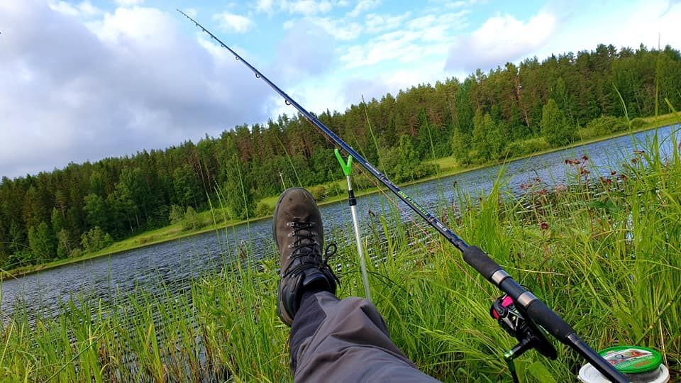
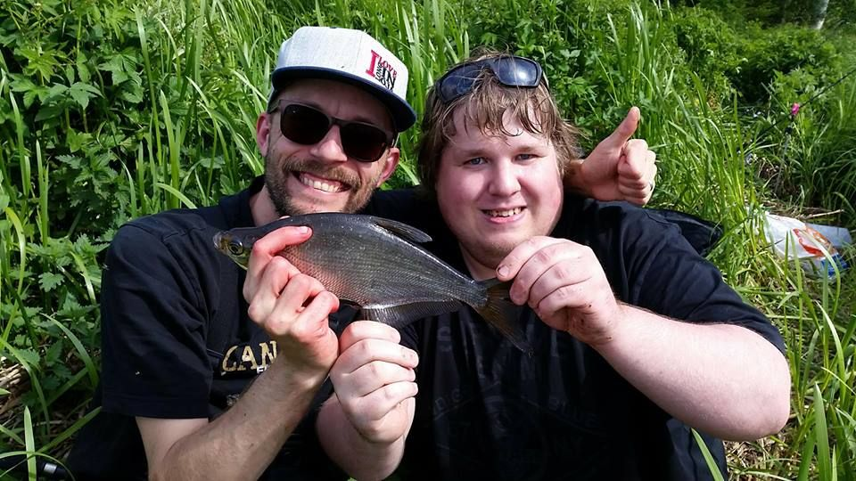
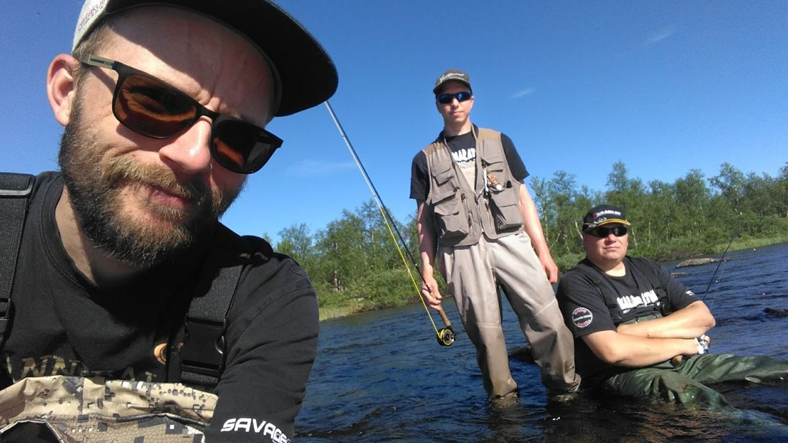
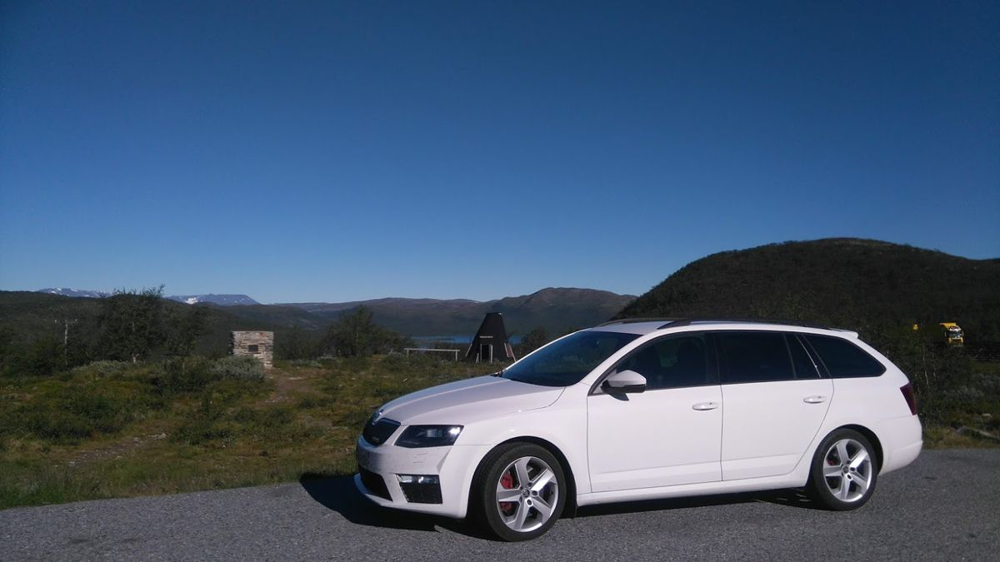
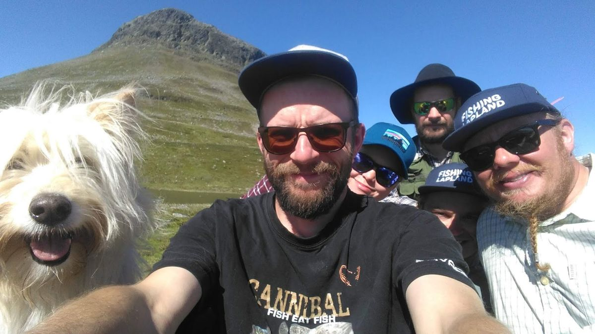
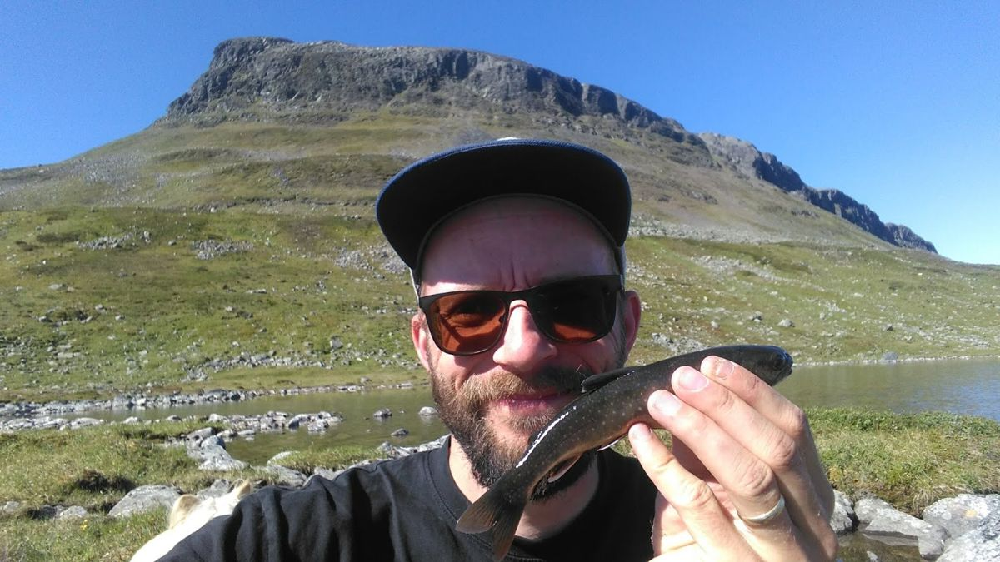
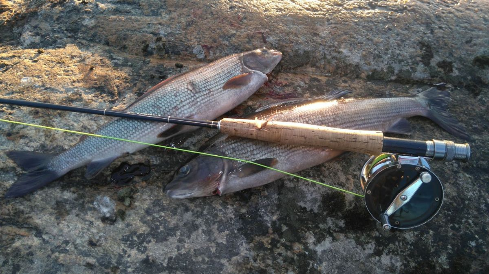
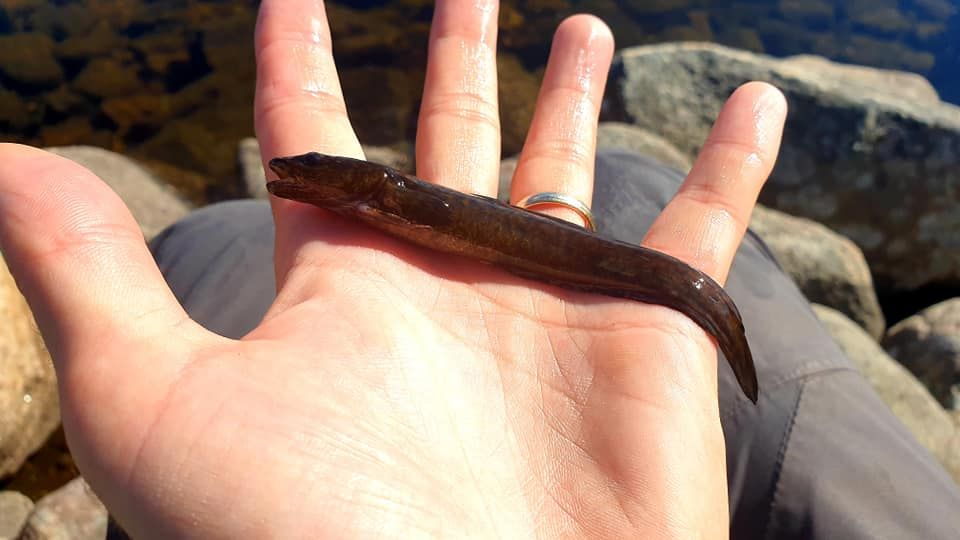
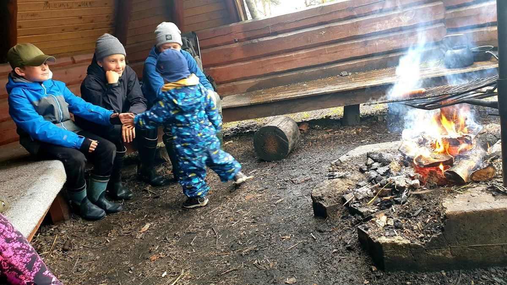
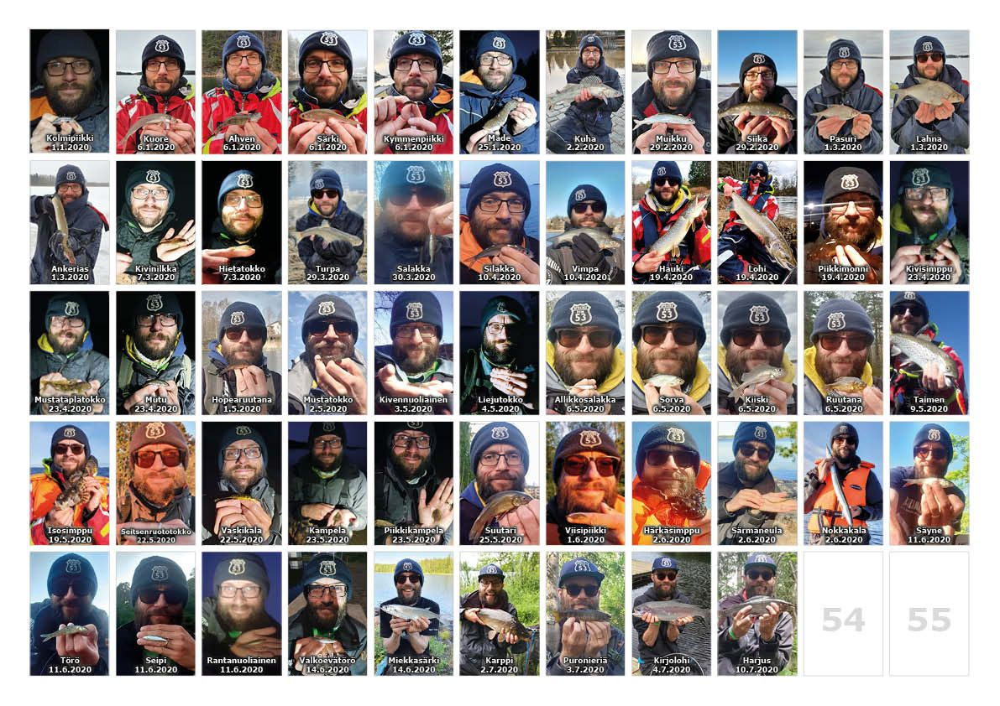

Blogitekstit · Heinäkuu 2020
Voiko tyhjän pyytämisestä oppia jotain?

Tietysti on pettymys, jos kalareissulla ei tavoitesaalista saa. Kuitenkin näistä epäonnistuneista reissuista saa aina jotain uutta seuraavalle kalareissulle. Minulle on lajijahdissa tullut tyhjiä reissuja, mutta silti tavoite on pysynyt kirkkaana ja pettymyksistä on vain ammennettu lisää voimaa seuraaville kalareissuille.
Sulkavajahdissa vai pilvivahdissa?


Perjantai iltana olimme Harrin kanssa sulkavajahdissa. Kalastuksen lomassa muistelimme, että 2018 siihen ei meillä ja Timillä montaa minuuttia mennyt, kun sulkavat olivat ylhäällä. Minulle ja Timille laji oli samalla uusi elämänpiste, Harri sen oli jo edellisvuona käynyt onkimassa.
Nyt olin yksin rannassa, on upea lauantaiaamu.
Heitän pohjaonkeni kohti joen keskustaa ja asetan sen penkkatikulle, vieressäni pörisee mehiläiset ja hyttyset. Taivaan sinessä pilvilautat lipuvat hiljalleen yhteen, muodostaen suurempia lauttoja.
Horisontissa harmaanpi pilvi luo säätiedotuksen lupaamaa sadeuhkaa. Kolmas kalareissu sateessa ei houkuta.
Vavan kärki heiluu tuulessa, ei sulkavan tai minkään muunkaan kalan tärpeistä.
Hiljaista on, mutta tässä on hyvä olla. Hiljaisuuden rikkoo vain vastarannan pelloilla aamulauluaan laulavat kurjet ja ylitse lentävä laulujoutsen pari - ikuiset sielunkumppanit.


Ensimmäinen tunti aamupistosta on kulunut, selkäni takana aurinko jatkaa nousuaan ja vastarannalta uhkaavasti vieryvät harmaan pilvet peittävät taivaan sineä.
Taivasta tuijotellessa tulee mieleen aluevaltauspeli Blokus, jossa palikoita vuoronperään lisäämällä on tarkoitus saada suurin oman värinen alue. Nyt taistelijoina ovat taivaan sininen ja sadepilvet harmaa.
Joskus on hyvä olla yksin ajatustensa kanssa, ehkä nyt oli sen aika.
Kävin pyytämässä tyhjää myös Karstulassa asuvan Esko Sorvalin kanssa. Mukavaa rupattelua rankkasateessa.
Satojen kilometrien hutireissu


Starttasin suunnitellusti 4:30, eli ennen kellon soittoa. Herätys oli laitettu kuudeksi. Levi jäi taakse, Pallas ohitettiin vauhdikkaasti ja lopulta saavuttiin Kilpisjärventielle. Matkalla kohti Kilpisjärveä pieni pöllö istui sähköjohdolla, taisi silmissä siintää aamupalaksi joku jyrsijä tienvarren heinikoista.
Ylpeä näky oli myös mäen päällä keskellä tietä seisova hirvi. Hiljensin vauhtiani ja katsoin tätä ylvästä näkyä vasten sinistä taivasta. Lopulta upea eläin siirtyi muutamalla askelmalla koivikkoon,
jääden katsomaan ohi ajavia autoja.
Vielä ennen määränpäätä näin kaksi kettua ja yhden suden näköisen koiran, tai koiran näköisen suden.
En päässyt tästä tunnistuksesta itseni kanssa yhteisymmärrykseen, joten todettakoon tuntomerkeistä näin; se oli nelijalkainen, harmaa, iso eikä sillä ollut pantaa kaulassa.
Matkalla ennen Kilpisjärveä yritin Ropinsalmen kohdalta tien penkan kivikoista kirjoeväsimppua lajipisteeksi. Vuonna 2018 se oli ensimmäinen kolo, nyt reilun 100 m matkalta nousi vain mateita.
Ajattelin mielessäni, että raudun saaminen Saanajärveltä olisi raskas urakka ja varsinkin sinne kipuaminen voimia vievä. Simpun jallittamista voin jatkaa illalla harjusjahdin jälkeen. Onhan simput yöaktiivisia kaloja, näin ajattelin.
Kaksi kurkea seisoo tiellä, nopeasti ne katoavat horisonttiin auton lähestyessä.


Muotkatakan jälkeen aukeaa horisontti. Suomen maateiden korkein kohta, matalimman kohdan eli Vuosaaren satamatunnelin etäisyys on 1169 km. Norjan puolen lumiset vuortenhuiput ja sinisenä kimmeltävä Kilpisjärvi.
Auto parkkiin kylmäaseman reunaan, vavat kiinni repun remmeihin ja kohti rautujahtia. Muutama vuosi takaperin vietin syntymäpäiviäni Saanatunturin juurella itselleni pääosin tuntemattomien ihmisten kanssa. Mukana olijoista tunsin vain Arktisten vesien tv-sarjassa tutuksi tulleen Elias Teriön.
Saanalle nousu on upea, selkeä hyvin mustaoranssein tolpin merkitty reitti nousee tasaisesti ylemmäs seuraten välillä kristallinkirkkaan puron uomaa. Uomassa näkee pieniä taimenia uivan, kun hetkeksi pysähtyy puron varrelle.
Juodessani purosta tajuan jättäneeni viehepakkini autolle. 3,5 km olisi takaisin laskua, joten annan vieheboxien olla ja luotan perhojen olevan mukana. On ne, oli pakko tarkistaa.
Siinä se kiiltää, Saanalompolo. Upea hiekkapohjainen lampi, jonka ohi polku kulkee. Päätän jatkaa matkaa ja lopulta myös Saanajärvi aukeaa edessäni. Hiki valuu selkääni pitkin, otsalla viimeiset hikipisarat kuivuvat kun kylmä jäämereltä puhaltava tuuli tuo tervehdyksensä.
Nyt on muuten kylmä.


Edellisen kerran kun istuin järven rannan mättäällä oli 11.7.2018, tuolloin juhlin 38 vuotis syntymäpäiviäni, seurassani koiramme Nemo. Nyt istuin yksin ajatuksieni kanssa, kädessäni perhovapa, jonka perukkeen päässä heilui pieni pupa.
Mielessäni toivoin, että myös tänä vuonna pieniä rautuja olisi rantakivikoiden koloissa kuten edellisellä kerralla. Kävin systemaattisesti jokaisen sopivan kokoisen kolon läpi, ei tärppejä. Ei havaintoja kaloista.
Tyhjää.
Oli luovutettava ja mentävä käymään rannalla näkyvällä kodalla. Kota kätki sisäänsä aamutoimilla olevan vaelluksella olevan naisen, jonka kanssa oli kiva rupatella. Myös tulipesän hiilos tarjosi sen lämmön mitä tulin kodan suojasta hakemaan.
”Tuolla toisella puolella oli kalastaja”.
Päätän lähteä jututtamaan naisen näkemää kalastajaa ja reippaan siirtymän jälkeen saavun miehen luokse.
"Tuleeko kalaa, kysyn kalastajalta."
Kerroin kuinka epätoivoista räpellystä koko reissuni on ollut ja kuinka unohdin myös vieherasiani autolle.
”Ota tuosta pakista, jos tarttet.” -Ville Terävä
Juttelemme ja käy ilmi, että hän on lukenut blogiani ja seuraa sitä muutenkin. Kiitos Ville siis tätäkin kautta vieheiden lainauksesta, kalastajat kyllä auttavat toisiaan, tilanteen sitä vaatiessa.
Heittelemme vierekkäin, kun pitkään vajonnut Bete-lotto pysähtyy ja jarru rääkäisee. Oliko se kala?
"Oudolta se tuntui, ehkä oli ehkä ei."
Kiitän Villeä ja jatkan matkaa kohti harjusjahtia ja Könkämäenoa. Matkalla kohti Saanaa huomaan, kuinka järvestä laskevassa purossa on kala. Kiven taakse jäävä syvempi kohta on todella tumman raudun piilopaikka. Lähestyn varovasti perhovapa kädessä kiveä ja pääsen jo heittoetäisyydelle, kun kala sukeltaa kivien koloon.
Alkaa epätoivoinen jallitus, kala vs. minä. Kala on pahasti kohdassa, jonka yli kulkee polun merkitty ylityskohta. Menen kuitenkin kiville ja kalastan virtaa pintaperholla. Seuraan katseellani perhon uintia virrassa ja käännän hetkeksi katseen rantaan saapuvien retkeilijöiden suuntaan.
Samalla se tapahtuu; Kala on kiinni, nostan vaistomaisesti vavan pystyyn ja jostain kumman syystä yritän nostaa kalan suoraan mättäälle. Kala nousee, ajattelin jo mielessäni, kuinka voin soittaa onnittelupuhelun vaimolleni, jonka synttäreitä hänen miehensä viettää jahdatessa ennätystä aivan huikeissa maisemissa.
Olisi se ollut hienoa omistaa ennätys vaimolleen, joka täyttää vuosia ja on kestänyt sekoilujani kohta 20 vuotta.
Kala nousee, seuraan katseellani sen liikerataa, kun se tippuu mättäälle. Olen jo nousemassa kalan luokse, kun se pomppaa ilmaan, kadoten ei taivaan sineen vaan mättään välistä kohti tummaa pimeyttä.
Istun epätoivoisena ja pettyneenä tuijottaen Saanaa, joka mitään sanomatta nauraa sisällään näkemälleen tilanteelle.


Kaikella on jokin syvempi tarkoitus, niin myös tällä takaiskulla. Ilman unohtuneita vieheitä en olisi tavannut Villeä enkä saanut keskustella hänen kanssaan.
Laskeutuessani alas, tulee kodalla tapaamani nainen vastaan.
"Saitko?"
"En"
Hymyilimme toisimmelle ja jatkoimme matkaamme hän ylös, minä alas.
Könkämäneno on kuulemma paikka, jossa harjukset hyppäävät syliin, kunhan jotain viehettä tai perhoa jokeen heittää. Näin oli myös vuonna 2018 jolloin olimme samaan aikaan Markuksen ja Timin kanssa joella kalassa.


Illan hämärtyessä tuikkimeri joen pinnalla oli todella upea, saimme kymmeniä + 40 cm harjuksia, itsellä suurimpien ollen 46 cm pituisia. Nappasi Timi myös upean siian.
Saavuin tutun kosken rantaan, näin niskalla olevan kiven, jolla näitä suuria harjuksia väsyttelin.
Kahlasin kivelle, vain todetakseni kuinka korkealla joen vesi oli. Kahlaaminen aikaisempana vuotena oli helppoa ja turvallista, nyt korkealla oleva vesi ei houkuttanut etenemään enempää.
Päätin kalastaa jokea rannoilta ja lopputulos oli puhdas nolla. Ei edes se ”varmin” lajipiste halunnut napata. Heittelin vielä parissa kohtaa jokea tyhjää ja siirryin jälleen kirjoeväsimppu jahtiin.


Nyt aloitin tienpenkan toisesta reunasta ja lopputulos oli sama, vain pieniä alle 10 cm mateita. Ei simppuja.
Ajaessani takaisin Leville mietin vain mielessäni, kuinka onnistuin kämmäämään tämän reissun näin pahasti?
Yritän vielä paikata simppupisteen osalta tilannetta kalasten ympäri Leviä, huonolla menestyksellä.


Tässäkin yrityksessä on yksi hyvä puoli, tapaan Oulusta kotoisin olevan Veli-Matti (Vellu) Kiviniemen ja hänen poikiensa Santen, Vernen ja Valten kanssa. Herra J otti tilanteen haltuun ja juoksi tulipaikan ympäri läpsien aina poikien kädet heidän kohdalle saapuessa. Annan vielä Vellulle painoja, että hän saa perhot uimaan tarpeeksi syvälle virrassa.
Rupattelemme nuotion ääressä ja vaihdamme paikka vinkkejä. Seuraavana aamuna saan viestin, jossa on illan saalikuva. Ei suuri, mutta harjus kuitenkin.
Tyhjän pyytämisessä on se hieno asia, että siitä voi aina parantaa, ehkä jo seuraavalla kerralla.
Täytän tänään 40, se on keskimäärin puolivälin krouvi ihmisen elämässä. Takana on uskomaton taival halki ihanan lapsuuden, epämukavan yläasteen ja elämäni paras asia perheen perustaminen.
Tein sen mitä lupasin, rikoin Timin tekemän ennätyksen, en ihan suunnitellusti, mutta ensimmäisenä kuitenkin. Vuotta on paljon jäljellä ja mitä vain voi tapahtua, Miika 52 lajissa ja Juuso 49 lajissa.
Seuraa ennätyksen etenemistä - saavutettu 10.7.2020


Pidän kirjaa lajilistasta ja tarkemmasta retkidatasta Google -taulukossa, joka löytyy jokaisesta ennätysyrityksen postauksesta.Tästä linkistä taulukko avautuu uuteen ikkunaan.
Seurantatilanne löytyy myös blogini oikeasta yläreunasta.
Vuoden aikana ennätysyrityksessä kulkee mukaan myös tämä kalataitelija-graaffikko Sakke Yrjölän suunnittelema SPECIES FIN 53 -merkki.
Paitakulmassa painatin pipoon ja lippikseen saman merkin. Tavoitteeni on saada aikaiseksi 53 saaliskuvaa tekstin alussa tekemääni taulukkoon joissa kaikissa kuvissa näkyisi tuo kyseinen tunnus.
Paitakulma on Suomalainen perheyritys, joka haluaa panostaa laatuun ja asiakastyytyväisyyteen. Tutustu yrityksen palveluihin tästä.